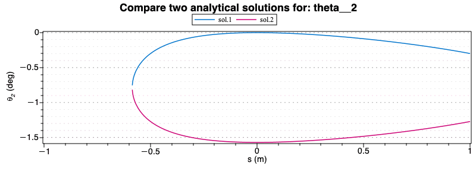
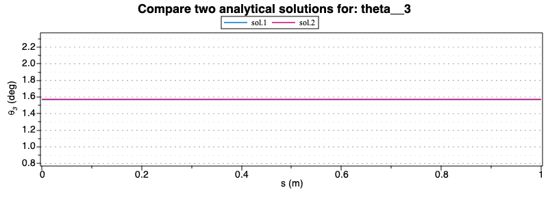
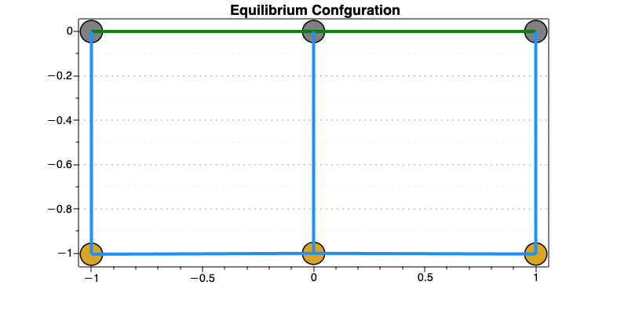
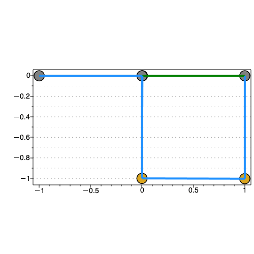
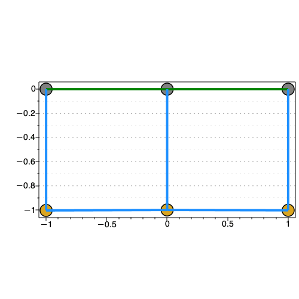

Kinematic Analytical Solution
In this section the two analytical solutions are plotted and compared both for theta2 and theta3.
Then the equilibrium configuration is plotted using the procedure defined previously
| > | display(plot(subs( sol_kine_all[1],data, s__2(t) =S, s__3(t) = 0.002942999986,theta__3(t) = -1.570797927,theta__1(t)=-1.570793602,theta__2(t)), S=-1..1, color=c_set[1], legend = "sol.1"),
plot(subs( sol_kine_all[2],data, s__2(t) = S, s__3(t) = 0.002942999986,theta__3(t) = -1.570797927,theta__1(t)=-1.570793602,theta__2(t)), S=-1..1, color=c_set[2], legend = "sol.2"), labels = ["s (m)", typeset(theta__2, " (deg)") ], size = [800,300], title = "Compare two analytical solutions for: theta__2"); |
|  |
| > | display(plot(subs( sol_kine_all[1],data, s__2(t) = S,s__3(t) = 0.003923999840,theta__1(t)=0.003923999840,theta__2(t) = -1.570785943, theta__3(t)), S=0..1, color=c_set[1], legend="sol.1"),
plot(subs( sol_kine_all[2],data, s__2(t) = S,s__3(t) = 0.003923999840,theta__1(t)=0.003923999840,theta__2(t) = -1.570785943, theta__3(t)), S=0..1, color=c_set[2], legend="sol.2"), labels = ["s (m)", typeset(theta__3, " (deg)") ], size = [800,300] , title = "Compare two analytical solutions for: theta__3" ); |
|  |
| > | solve(Phi,qD_vars,explicit=true,allsolutions=true,maxsols=4): |
Display the equilibrium configuration found in the previous section using the Principal of Virtual Work
| > | display(draw_mech(data,sol_kine_all[2],[s__2(t) = op(2,sol_fs[1]), s__3(t) = op(2,sol_fs[2]), theta__1(t) =op(2,sol_fs[3]), theta__2(t) = op(2,sol_fs[4]), theta__3(t) = op(2,sol_fs[5])]),size=[800,400],title = "Equilibrium Confguration"); |
|  |
Display the equilibrium found using both analytical solutions
| > | display(draw_mech(data,sol_kine_all[1],[s__2(t) = op(2,sol_fs[1]), s__3(t) = op(2,sol_fs[2]), theta__1(t) = op(2,sol_fs[3])]),size=[800,400]):
display(draw_mech(data,sol_kine_all[2],[ s__2(t) = op(2,sol_fs[1]), s__3(t) = op(2,sol_fs[2]), theta__1(t) = op(2,sol_fs[3])]),size=[800,400]): DocumentTools:-Tabulate(Array(1..2,[%%,%]),interior=none,exterior=none,widthmode=percentage,width=100): |
 |
 |